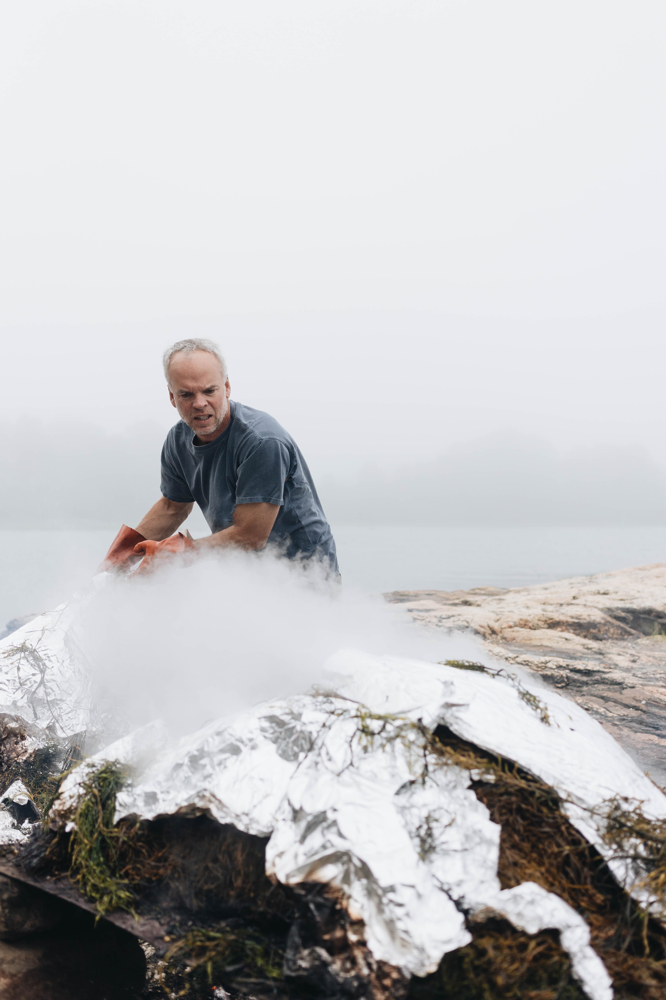
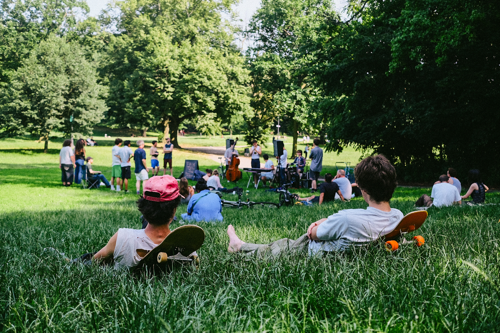
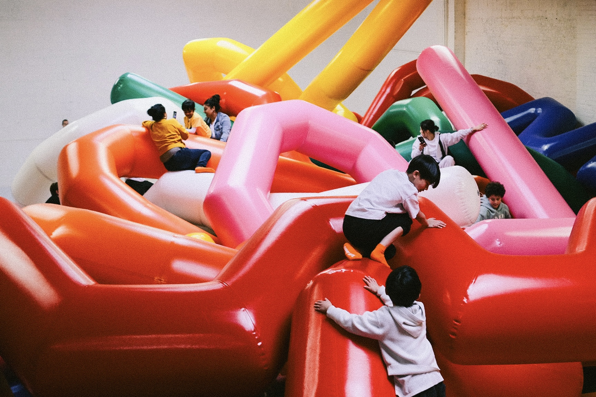
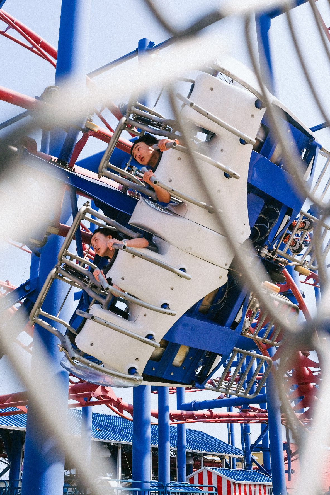
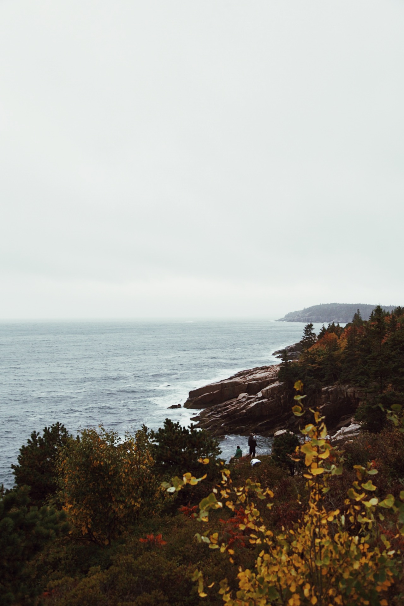
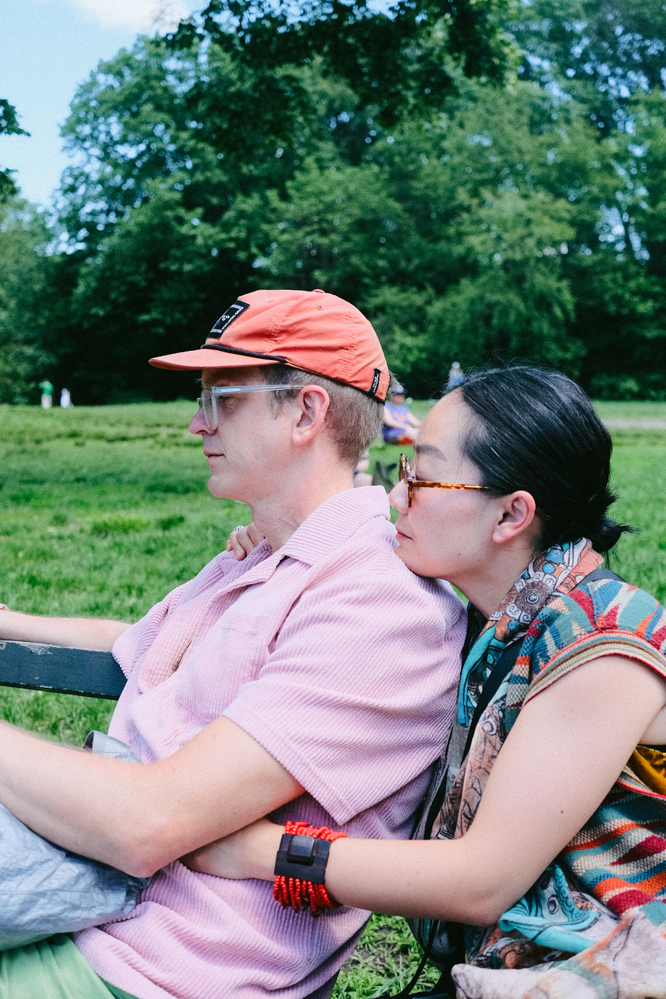
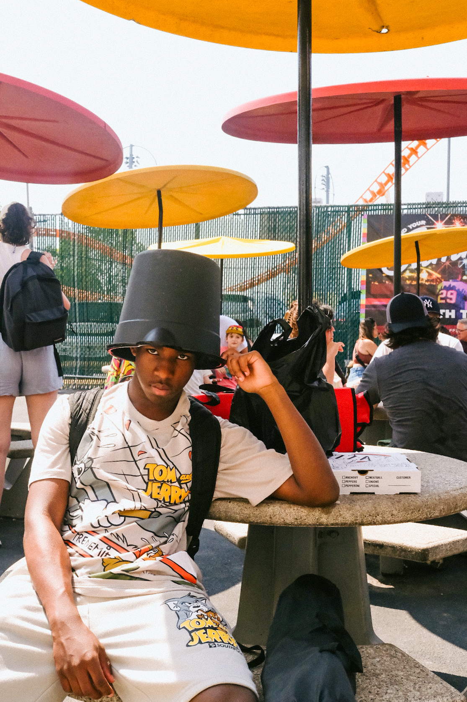
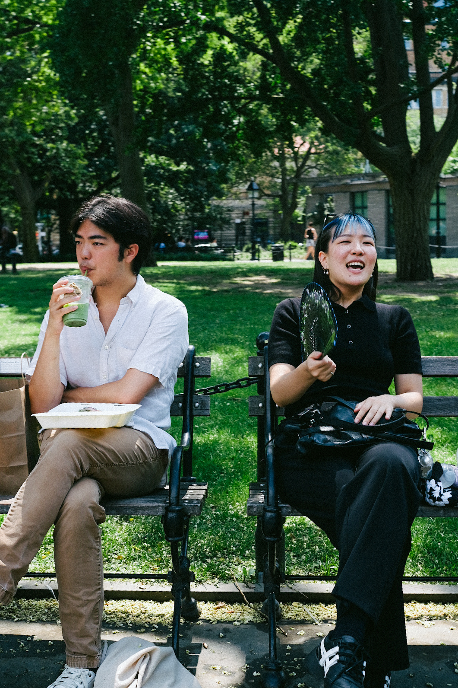
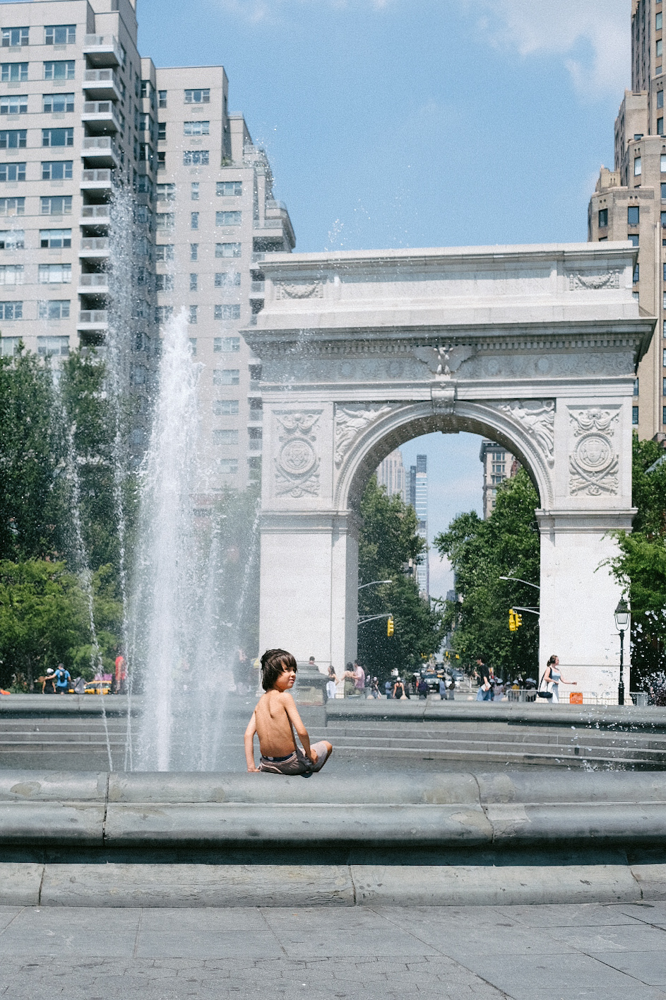

Street
Photography
I shoot on the street the same way I approach design — looking for the moment where structure and spontaneity collide. Inspired by Vivian Maier and Henri Cartier-Bresson.














